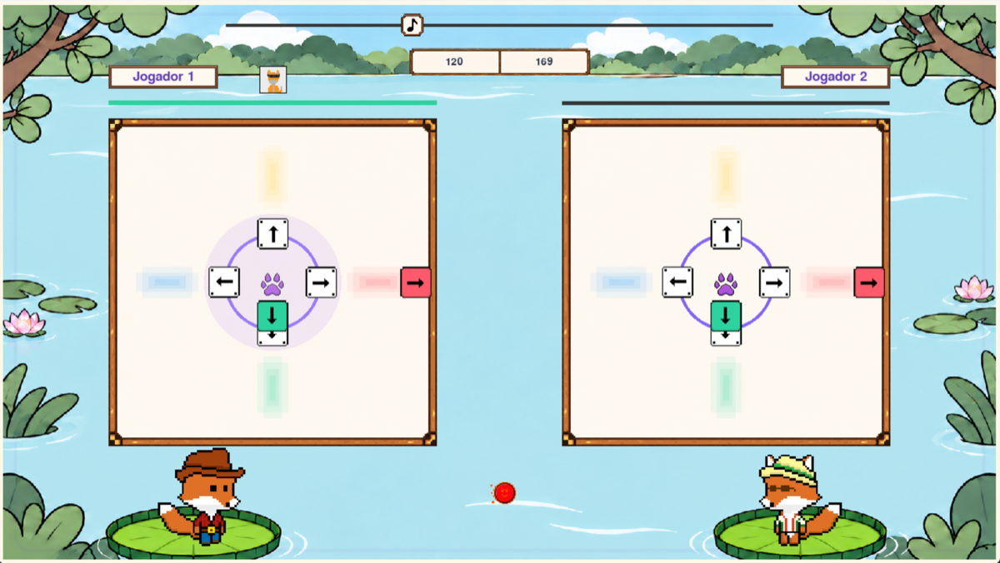
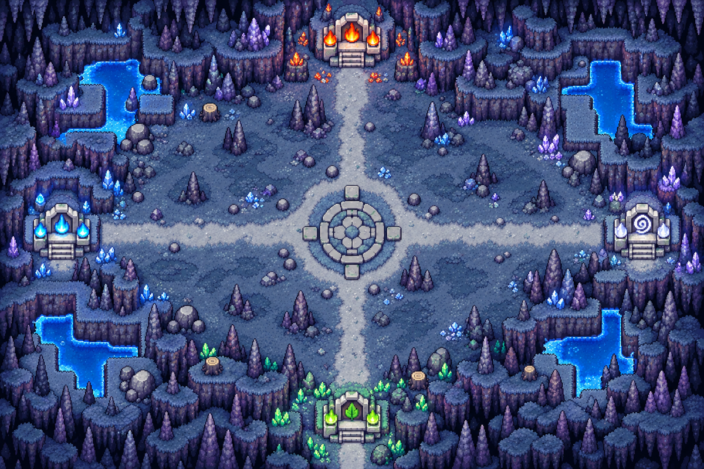
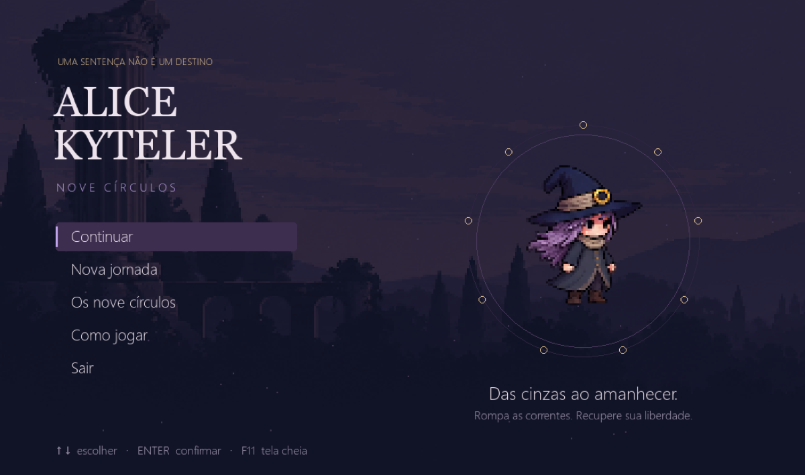
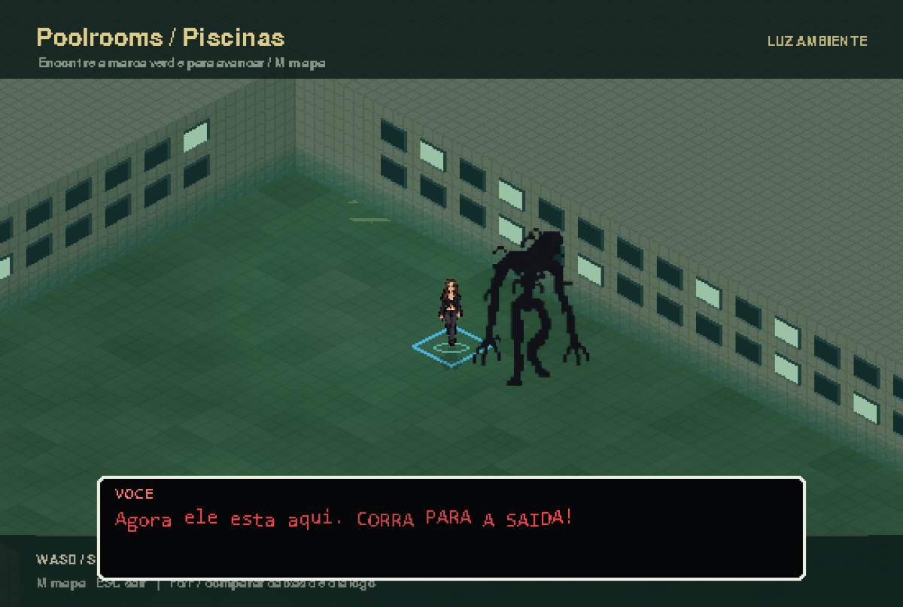
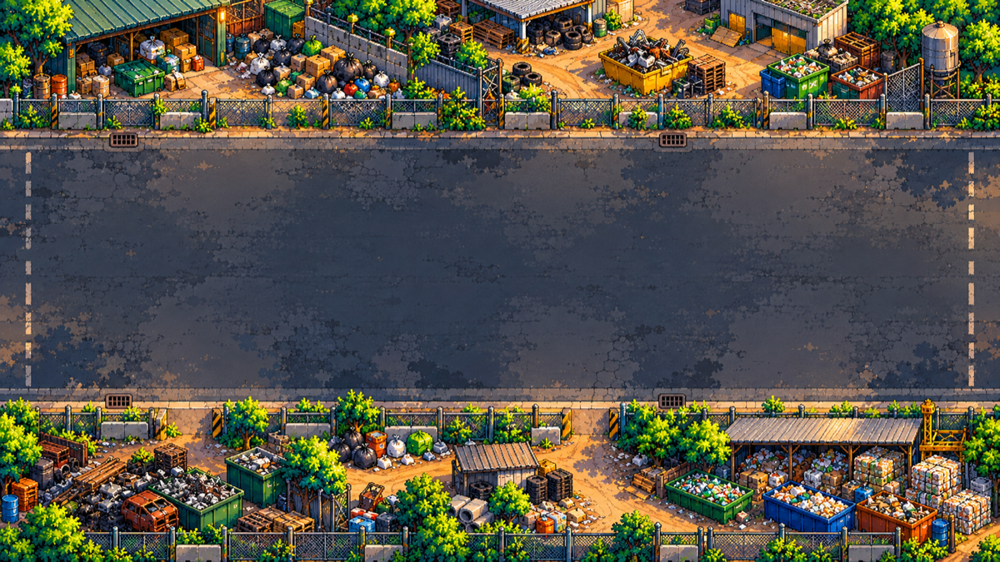
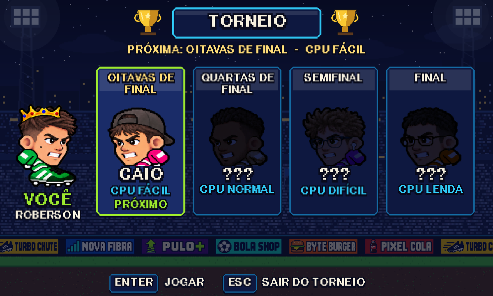
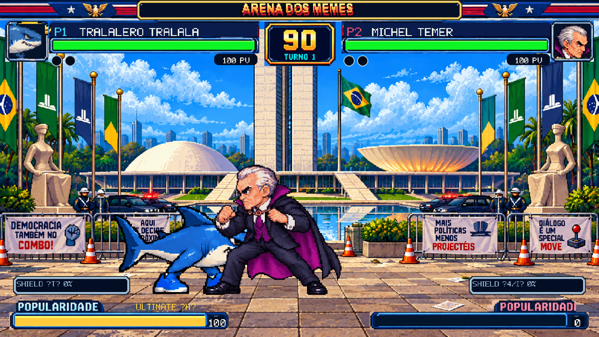
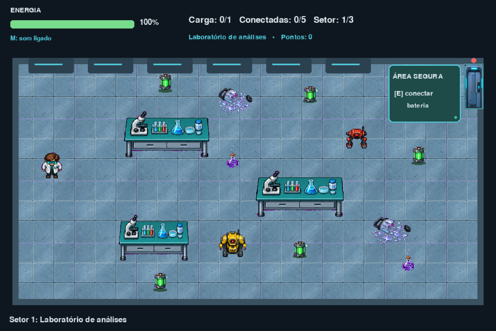

Ritmo & MúsicaThe Fox Funk
Sinta a batida, entre no ritmo e desafie seus amigos em uma vibrante batalha musical com personagens animados e seleção de trilhas.
Criadores:
Júlia Fontes · Nathan Kuipper
Projetos autorais desenvolvidos em Python e Pygame. Explore os sites oficiais de cada equipe, conheça os universos criados e confira o processo de desenvolvimento.
Acesse a página oficial publicada no GitHub Pages por cada equipe:

Ritmo & MúsicaSinta a batida, entre no ritmo e desafie seus amigos em uma vibrante batalha musical com personagens animados e seleção de trilhas.

Aventura & RPGEmbarque em uma jornada épica com Bram através de florestas ancestrais e cavernas enigmáticas em busca do lendário último elixir.

Plataforma & DesafioSupere perigos mortais, escale plataformas móveis e arremesse poções estratégicas ao longo dos nove círculos místicos da jornada.

Sobrevivência & MistérioExplore labirintos liminares infinitos, salas desoladas e perigos ocultos nas sombras neste projeto de atmosfera e sobrevivência.

Ação & Meio AmbienteA cidade está um caos de resíduos. Vista o uniforme de gari, recolha os entulhos e restaure a ordem ambiental dos bairros e praças.

Futebol ArcadeFutebol arcade retrô com personagens cabeçudos, arenas temáticas que vão do Insper à praia e disputas competitivas cheias de gols.

Luta 2D ArcadeDuelos intensos de luta 2D em pixel art com lendas da cultura da internet brasileira, cenários icônicos e combos hilários de arcade.

Fuga & SobrevivênciaA segurança falhou e os robôs saíram de controle. Sobreviva a três setores científicos, conecte baterias e alcance a saída antes que sua energia acabe.